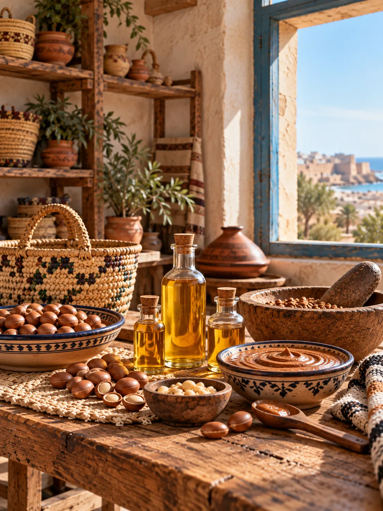
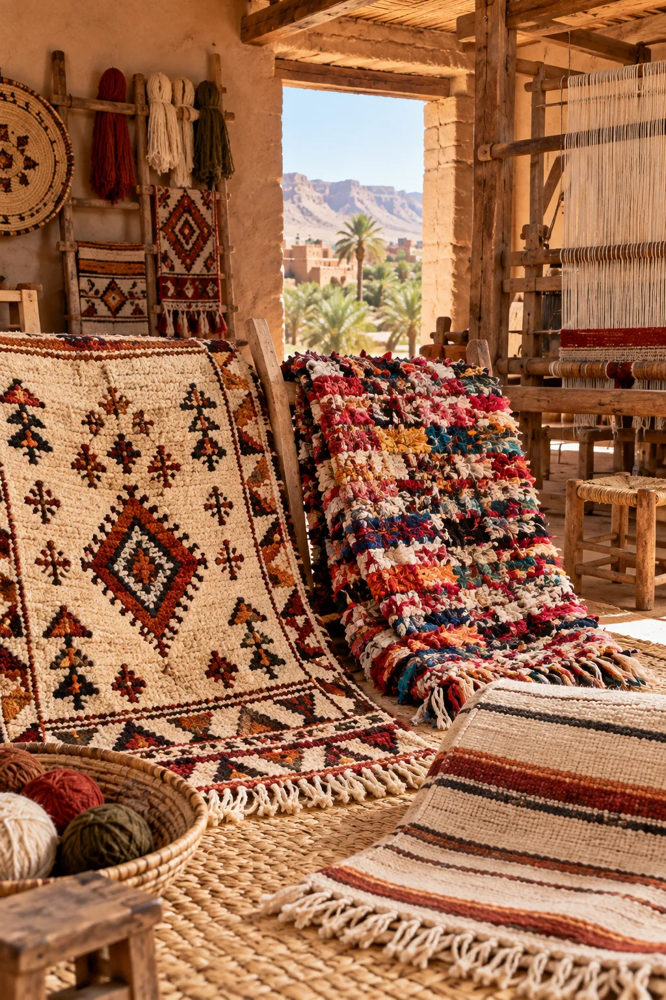
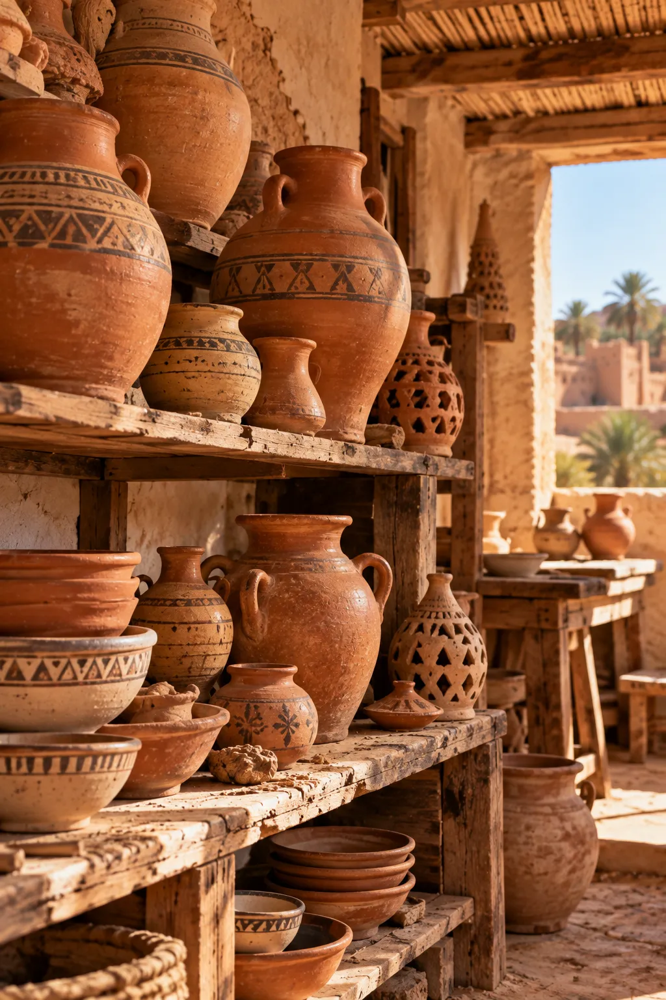
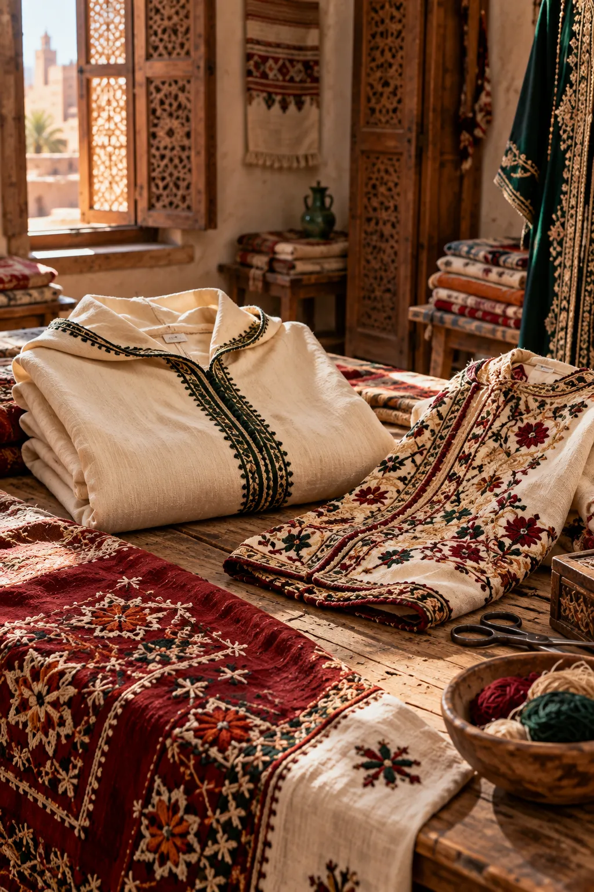
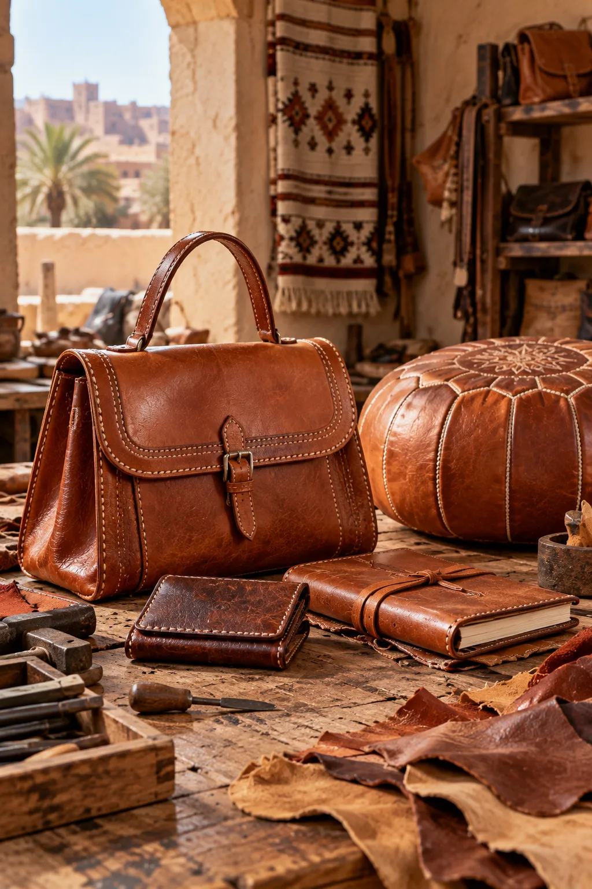
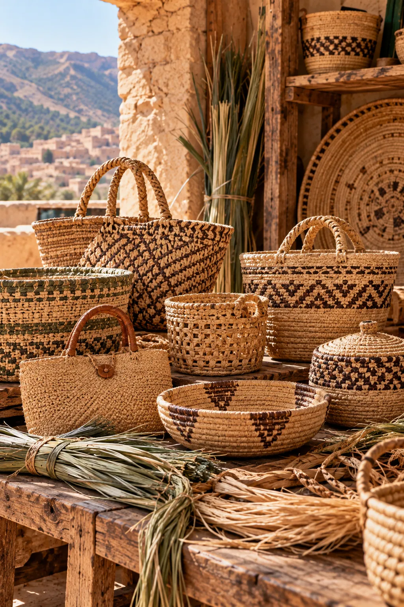
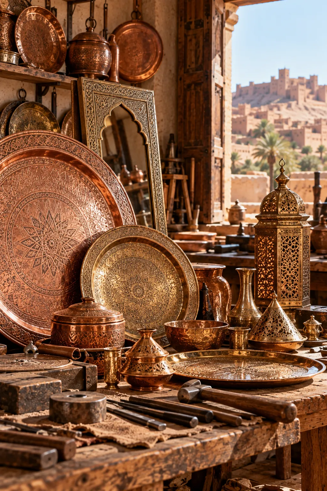
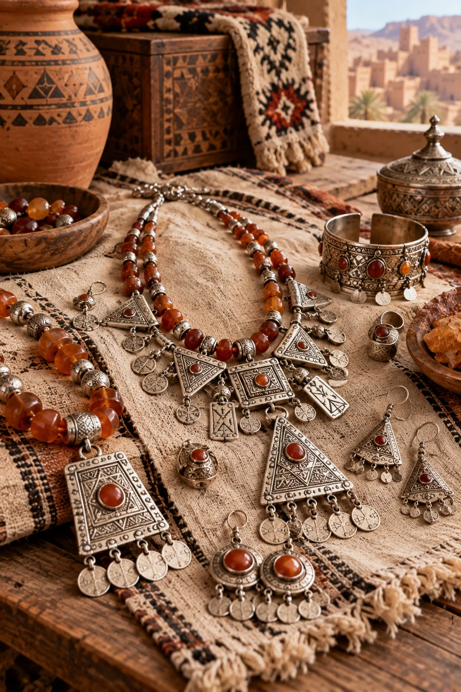
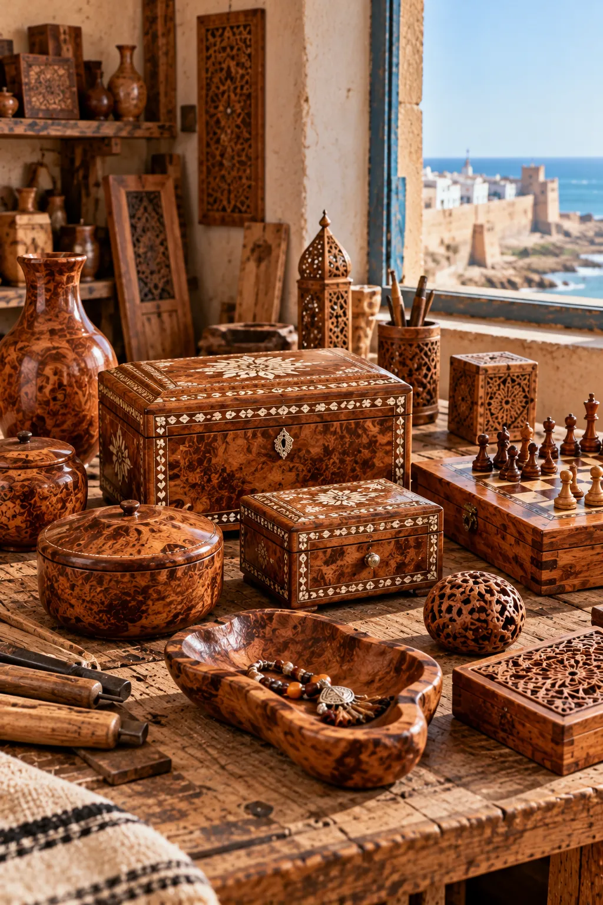

AJDDIGUE
Essaouira — Marrakech-Safi
Une coopérative féminine qui valorise l’argan à travers ses huiles alimentaires et cosmétiques ainsi que l’amlou traditionnel.
Voir plus d'info ...Parcourez les coopératives par région et par spécialité, du tissage à la poterie en passant par le zellige, l’argan, le cuir et la vannerie.
LE SAVOIR-FAIRE MAROCAIN
Partez à la rencontre des artisans et découvrez leurs créations, leurs histoires et les traditions des régions du Maroc.

Essaouira — Marrakech-Safi
Une coopérative féminine qui valorise l’argan à travers ses huiles alimentaires et cosmétiques ainsi que l’amlou traditionnel.
Voir plus d'info ...
Zagora — Drâa-Tafilalet
Une coopérative qui perpétue l’art du tapis marocain à travers les tapis amazighs, les Boucherouite et les hanbels traditionnels.
Voir plus d'info ...
Rissani — Drâa-Tafilalet
Une coopérative d’artisans qui valorise la poterie traditionnelle à travers des pièces en terre cuite façonnées avec soin.
Voir plus d'info ...
Talsint — Oriental
Une coopérative qui met en valeur les textiles traditionnels, notamment les djellabas, les caftans et les tapis tissés à la main.
Voir plus d'info ...
Laâyoune — Laâyoune-Sakia El Hamra
Une coopérative spécialisée dans la maroquinerie artisanale, avec des sacs, des accessoires et des objets décoratifs en cuir.
Voir plus d'info ...
Taza — Fès-Meknès
Une coopérative qui transforme les fibres végétales naturelles en paniers et accessoires tressés à la main.
Voir plus d'info ...
Ouarzazate — Drâa-Tafilalet
Une coopérative qui valorise le travail du métal à travers des plateaux ciselés, des lanternes et des objets décoratifs artisanaux.
Voir plus d'info ...
Sidi Ifni — Guelmim-Oued Noun
Une coopérative qui met en valeur la bijouterie artisanale et les ornements inspirés des traditions amazighes et sahariennes.
Voir plus d'info ...
Essaouira — Marrakech-Safi
Une coopérative qui valorise le travail du bois de thuya à travers des coffrets, des boîtes décoratives et des objets artisanaux.
Voir plus d'info ...